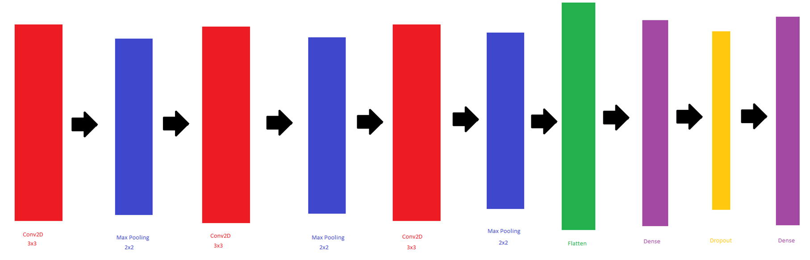
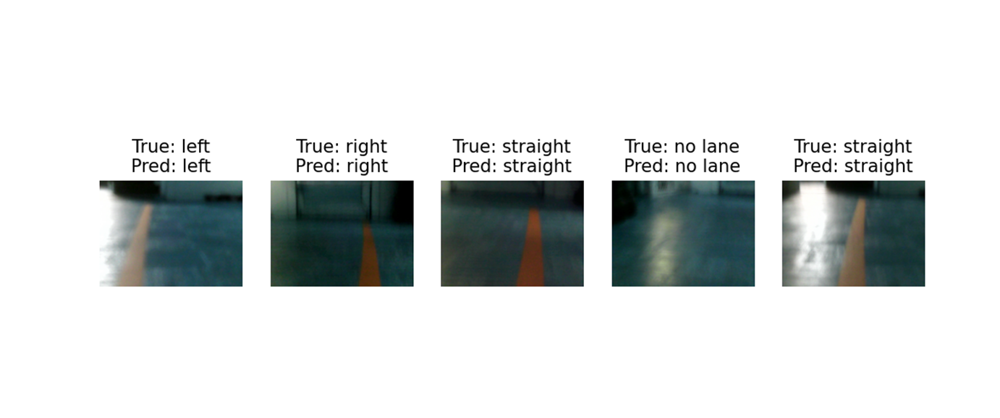
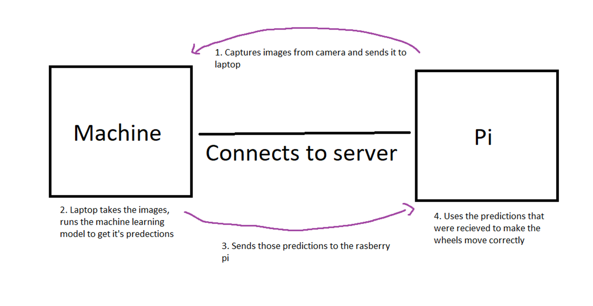

Self-Driving Vehicle AI
A year-long autonomous vehicle project developed in association with Harrisburg University of Science and Technology, built on the Yahboom G1 AI Vision Smart Tank. The project trains a convolutional neural network to recognize a track from camera images and uses those predictions to steer the robot in real time.

Project Overview
This project was developed over a full year as a research and software engineering project centered on the Yahboom G1 AI Vision Smart Tank. My goal was to give the robot the ability to recognize and follow a physical track using a trained neural network instead of hard-coded movement logic.
The system works as a client-server pipeline: the robot's onboard camera captures images and sends them from the Raspberry Pi to my laptop over the network. My laptop runs the trained model to generate steering predictions from each image, then sends those predictions back to the Pi, which uses them to drive the motors and adjust the wheels accordingly.
Project Demonstration
Development Gallery

Model layers:This is the amount of layers that the model was trained on as you can see it pools three times before flattening then drops any uneeded data at the end.

Compiling and training the CNN in TensorFlow/Keras on the labeled track-image dataset.

How the systems interact: the Pi captures and sends images to the laptop, the laptop runs predictions, and sends steering commands back to the Pi.
Key Features
- Convolutional neural network trained to detect the track from camera images
- Client-server architecture linking a Raspberry Pi to a laptop over the network
- Real-time image capture on the Pi, sent to the laptop for processing
- Prediction results sent back to the Pi to control motor movement
- Labeled image dataset used for supervised training
- Python implementation with TensorFlow and Keras
Technologies Used
Language: Python
Frameworks/Libraries: TensorFlow, Keras
Hardware: Yahboom G1 AI Vision Smart Tank, Raspberry Pi
Topics: Artificial Intelligence, Machine Learning, Computer Vision, Robotics
Tools: Python, Git, GitHub
Challenges
One of the biggest challenges was building a labeled dataset good enough for the model to reliably recognize the track, and tuning the CNN so its predictions translated into smooth, accurate steering rather than jerky or incorrect movement.
Getting the Pi-to-laptop pipeline working reliably was another major hurdle — capturing images on the Pi, sending them to the laptop, running predictions, and sending the results back all needed to happen quickly enough for the robot to respond in real time.
What I Learned
This project significantly expanded my understanding of convolutional neural networks, supervised training with labeled image data, and how to structure a real-time client-server system for a robotics application.
It also strengthened my ability to work across the full pipeline — from data collection and preprocessing to model training and deployment on physical hardware — while documenting the research and iterating on what wasn't working.
Future Improvements
- Expand the labeled dataset for better generalization
- Reduce latency in the Pi-to-laptop prediction pipeline
- Experiment with different CNN architectures
- Add obstacle detection alongside track following
- Improve visualizations of training performance